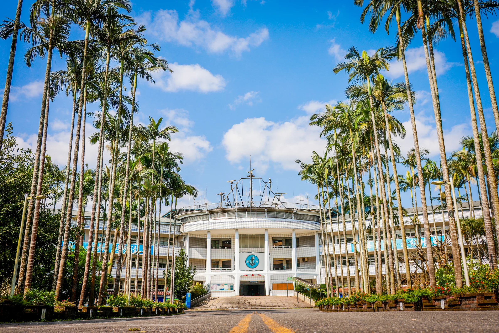
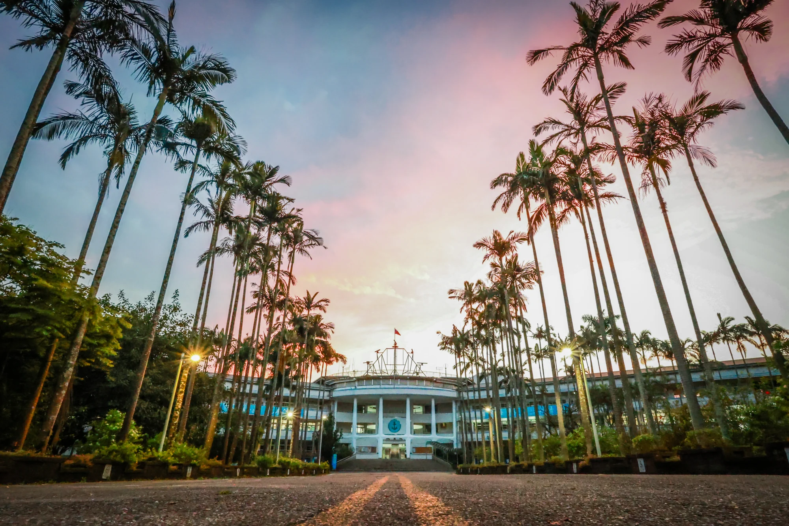
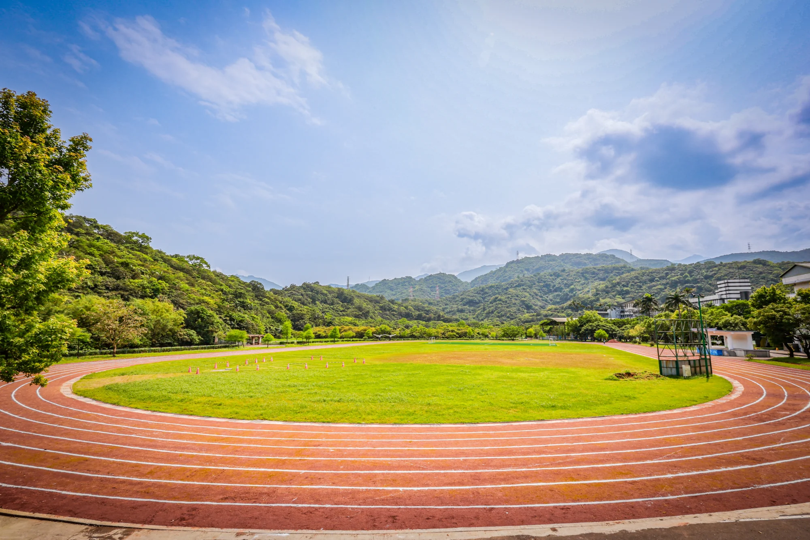
椰林大道・敬業樓
FIND YOUR PASSION
找到熱愛，學出未來
以實作累積底氣，以專業連結世界。
在多元學習中，找到屬於你的舞臺。
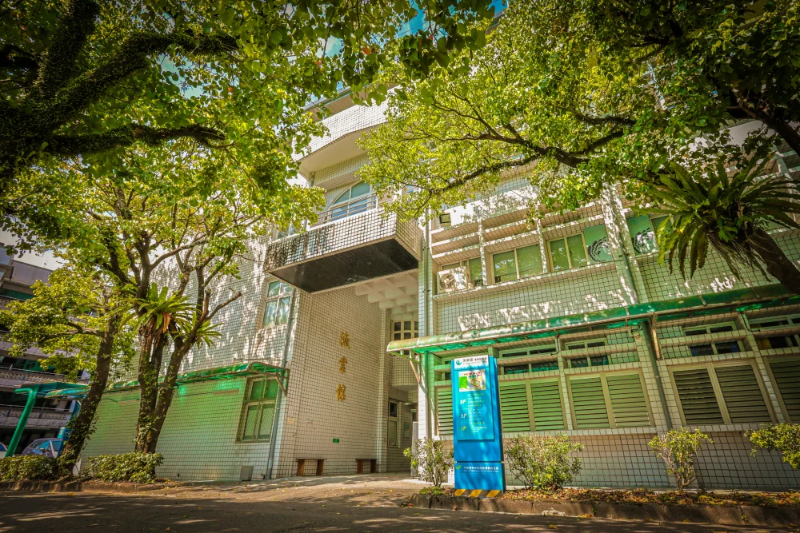
01FISHERIES
漁業科
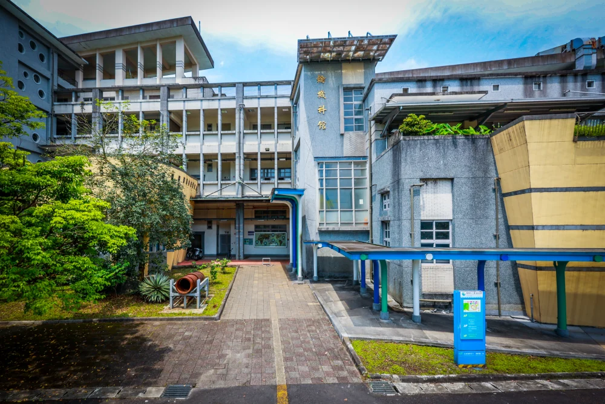
02MARINE ENGINEERING
輪機科
03
AQUATIC FOOD PROCESSING
水產食品科
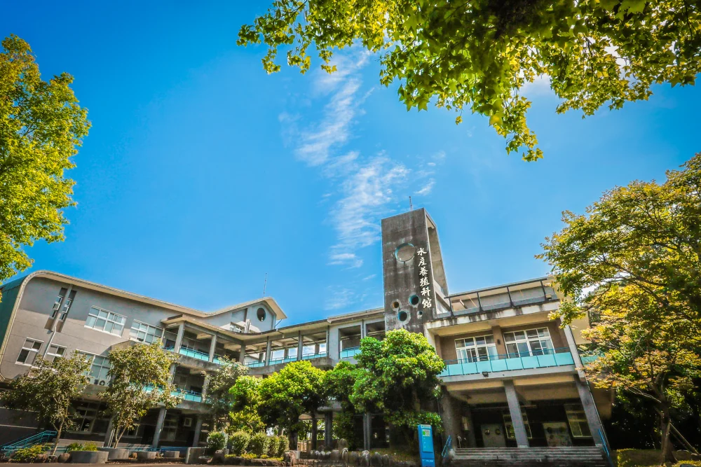
04AQUACULTURE
水產養殖科
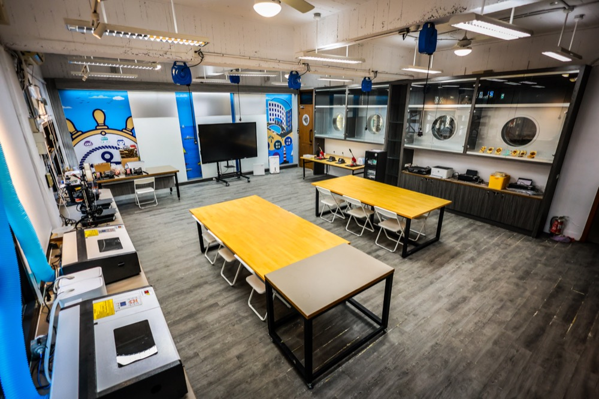
05場域示意ELECTRONICS
電子科
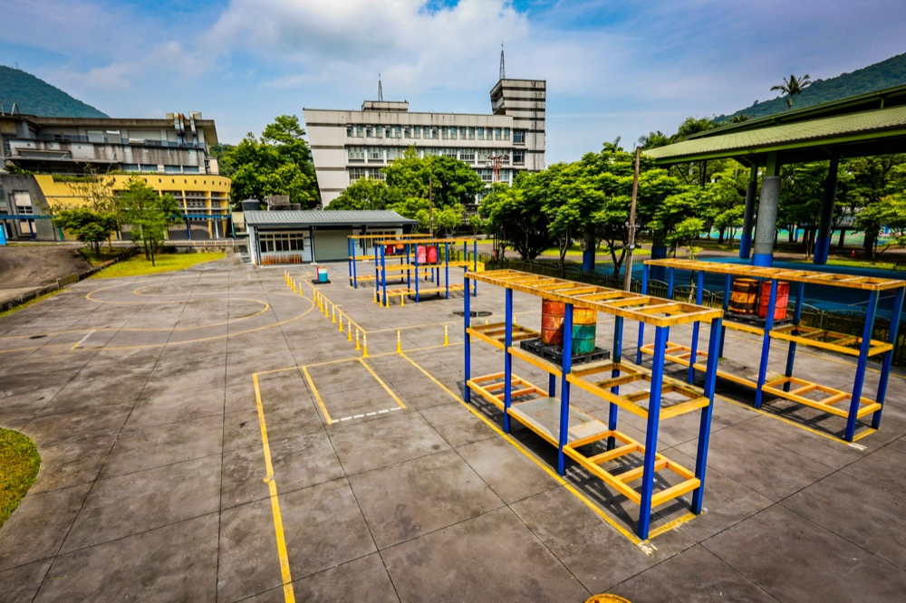
06場域示意SHIPPING MANAGEMENT
航運管理科
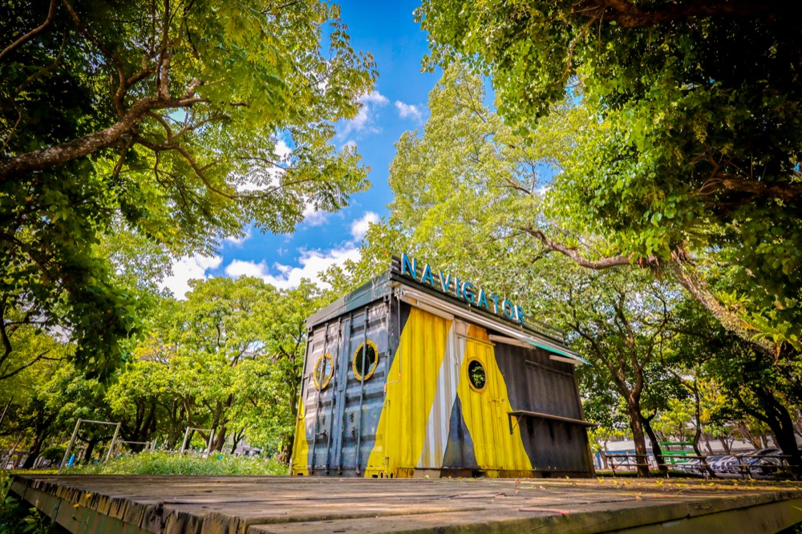
07場域示意TOURISM & HOSPITALITY
觀光事業科（餐飲技術科）
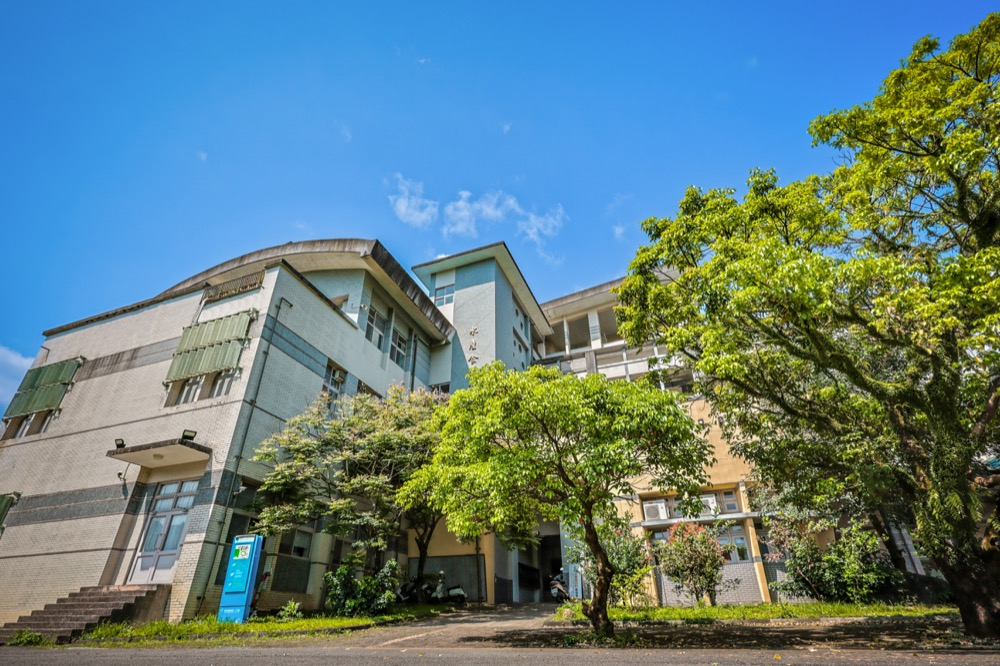
08場域示意BAKING & FOOD
烘培食品科
09場域示意
SPORTS
體育班
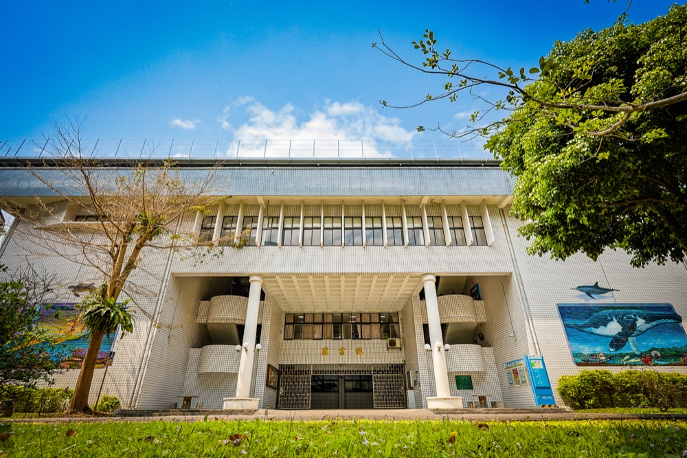
10場域示意CHINESE LANGUAGE
國文科
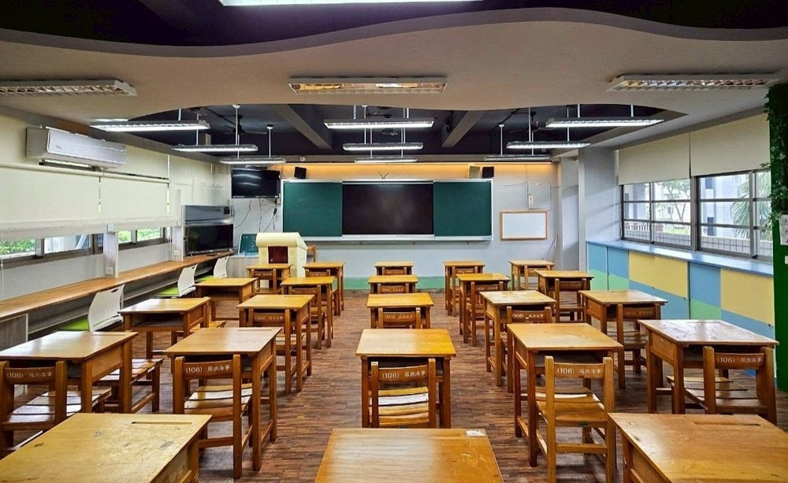
11場域示意ENGLISH LANGUAGE
英文科
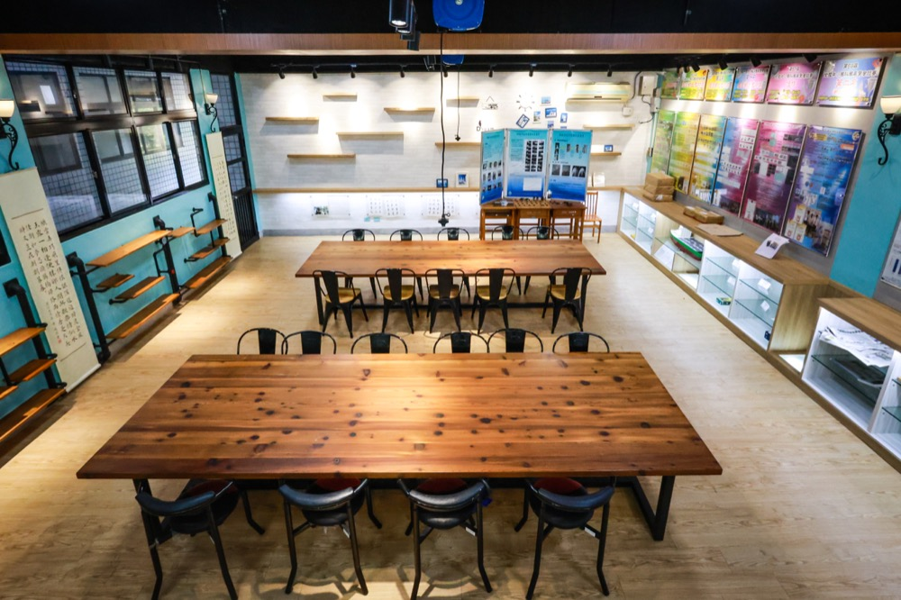
12場域示意MATHEMATICS & SCIENCE
數理科
QUICK ACCESS
你的校園，
一站連結。
找到需要的資源，把時間留給學習。
活動花絮
相簿示意｜目前使用校園與教學空間照片，正式內容可替換為活動紀錄。